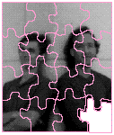
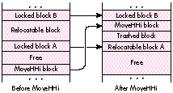

See if you can solve this programming puzzle, presented in the form of a dialog
between Konstantin Othmer (KON) and Bruce Leak (BAL) -- and a special guest, Apple
summer intern Mike Dodd. The dialog gives clues to help you. Keep guessing until
you're done; your score is the number to the left of the clue that gave you the correct
answer. These problems are supposed to be tough. If you don't get a high score, at least
you'll learn interesting Macintosh trivia.
Mike Hey, guys. I've got one for you I bet you can't get.
KON Well, I haven't been able to get you over to the poker game; maybe I can beat you
here. Wanna put your summer salary on it, schoolboy?
BAL Careful, Mike. You're talking to trained professionals here.
Mike OK. We have this true multimedia application that does lots of things: plays
movies and sounds and does some GWorld stuff. After a while it crashes with a corrupt
heap, usually SysError 33, and sometimes with a bus error. I'm using the latest
QuickTime, and I have that snazzy PowerPC QuickDraw extension that installs
PowerPC native QuickDraw on 68K-class machines.
BAL Sounds like some quality software you're running there. I doubt it's QuickTime's
fault.
KON Yeah, and the PowerPC stuff is pretty awesome. You wouldn't stick us with some
stupid application bug, so it's probably a problem with the Sound Manager. Is this that
MoveHHi Sound Manager problem? MoveHHi snags the whole stack, and when the sound
interrupts come in, the stack overflows into the application space, corrupting the
heap. Since the Sound Manager is at a higher interrupt level than the stack sniffer
VBL, it never detects the problem. Unsolved Mysteries: Solved!
100 Mike I'm using the new Sound Manager, version 3.0.
BAL I guess Reekes did a good job with compatibility on the new Sound Manager. He
even maintained all the bugs!
Mike Reekes swears there's not a line of code the same between the new and old Sound
Managers. Besides, the new Sound Manager patches MoveHHi to not use as much stack.
KON Does it happen with the old Sound Manager?
90 Mike Yep. Same thing.
BAL Hmmm. So what are the circumstances around the crash? Do you have a
reproducible case?
80 Mike It seems to happen fairly randomly. But it generally occurs when I push a
button that plays a sound. Sometimes it happens the first time I push the button; other
times I push the button over a hundred times before it crashes.
KON Turn on heap scrambling in the application and system heaps and run something
like the MemHell extension, which forces a worst-case memory scenario. That should
bring the problem out more frequently. Maybe you can get a reproducible case.
BAL Yeah, and turn on A-trap recording and heap checking so that we can narrow down
the problem area.
70 Mike The application is running really slowly now, but the problem doesn't
happen any more frequently. Every time you crash, you notice the last trap that the
application called was SndNewChannel.
KON Wait a second. The application calls SndNewChannel every time it plays a sound?
It should just call SndNewChannel once at startup for each channel it needs and then
keep reusing those.
BAL What happens if you fix the application?
65 Mike The problem goes away. But you haven't found the bug yet. Although calling
SndNewChannel all the time may slow you down, it isn't illegal and shouldn't cause
heap corruption.
BAL Is anything else going on while the sound is being played?
60 Mike The problem seems to happen only while a movie is playing. The application
calls SndNewChannel, SndPlay, and SndDisposeChannel every time it wants to make a
sound, but why the crash?
BAL Does the movie have sound? What happens if you turn off the sound in the movie?
55 Mike The problem goes away.
KON What's the last trap called inside SndNewChannel before the crash?
50 Mike MoveHHi.
KON What if you don't play the video?
45 Mike It crashes.
BAL Change the button that's doing the SndNewChannel, SndPlay, and all that other
stuff; make it so it creates a bunch of handles and calls MoveHHi on them instead.
40 Mike Now the machine crashes more frequently.
BAL So now we know that MoveHHi and playing the sound in the movie have something
to do with it. Make it so that when you push the button, the movie starts playing at the
beginning; then do NewHandle, MoveHHi, and DisposeHandle in a loop with a counter,
and keep the loop counter at location 0 so that when you crash you can see which
iteration you're on. You might have to make the size of the handles vary in case the
failure depends on block size or position, since that'll help spread the allocations
throughout the heap.
35 Mike It seems to happen consistently on the sixty-ninth iteration of the loop,
reproducibly, if I start from launching the program.
KON Go into MacsBug and put a breakpoint in the loop when the loop counter is 69.
30 Mike You hit your breakpoint and trace over the call to MoveHHi, and it works
fine. If you say go, you crash a hundred iterations later.
KON Rather than use MacsBug, change the code to break on the sixty-ninth iteration.
Then what happens when you trace over MoveHHi?
25 Mike It works fine.
BAL OK. Change the code to break on the seventieth iteration.
20 Mike You get to the breakpoint at 70 and everything is fine.
KON So somehow this thing is timing sensitive. Have the program compare with a
really big number and see when the heap goes bad. Then change the number so that it
breaks right before the problem code.
15 Mike When you break and trace, it doesn't happen.
BAL What if I turn off interrupts during my MoveHHi loop?
10 Mike It works fine, but you only hear the first half second of sound from the
movie. Since interrupts are blocked, the Sound Manager can't call back to QuickTime to
get the next piece, which QuickTime has queued up in the mean time.
KON Great, so what you're saying is we can now break right before the MoveHHi that
would cause it to happen if we didn't break there.
BAL Right, so go ahead and break there. Dump the state of the heap and log it to a file.
Then do the same thing, this time comparing with a higher number and letting it trash
itself, and dump the heap again. Compare the heaps and figure out what's going on.

5 Mike The interesting part of the heap before and after the MoveHHi call is shown in
the figure. Before MoveHHi there was a locked block, labeled A in the figure, which is
marked as relocatable afterward. The relocatable block just below locked block B is
getting overwritten by the block we're calling MoveHHi on.
KON MoveHHi works by first saving the contents of the block that you're moving, then
marking the block as free. Then it calls CompactMem on the heap, which bubbles all
the free space up to any islands and all relocatable blocks down. Then it copies the
block to the free block just before the island.
BAL And someone is coming in at interrupt time and unlocking the island, block A in
the figure. Instead of remembering the location of the island, MoveHHi searches for it
after the CompactMem call. Since that block was unlocked by an interrupt after
CompactMem, a different block is found the second time. When MoveHHi backs up to the
previous, presumably free, block and starts copying data, the heap gets trashed.
Mike Yeah, that interrupt unlocking the block was QuickTime, BAL. It turns out the
Sound Manager does the same thing. Apparently the "system architects" at the time
thought it was OK to call HUnlock on a locked block during an interrupt. Not! We fixed
it by deferring all HUnlock calls until MoveHHi finishes. This was the cleanest fix; it
keeps us from patching out huge parts of the Memory Manager. But we were stumped
for quite a while.
KON Nasty.
BAL Yeah.
SCORING
KONSTANTIN OTHMER AND BRUCE LEAK have been awarded a subcontract to debug the
Ada software for the cost-reduced space station backup project, code named
BALKON-4. While BAL has found that rocket science makes him nauseous, KON has
taken to weightlessness like a bug to code and is thinking of opening KONstellation, the
first casino in space.*
Mike DODD is the official QuickTime perpetual summer hire, just finishing his fourth
summer with Apple. He claims that someday he'll actually graduate from the
University of Tennessee and get a full-time job. Mike spends a lot of his time inside
MacsBug trying to make QuickTime crash less, or at least finding cool bugs to try to
stump KON and BAL with. *
The MemHell extension is on this issue's CD. *
Thanks to Gary Davidian, Peter Hoddie, and Jim Reekes for reviewing this column. *